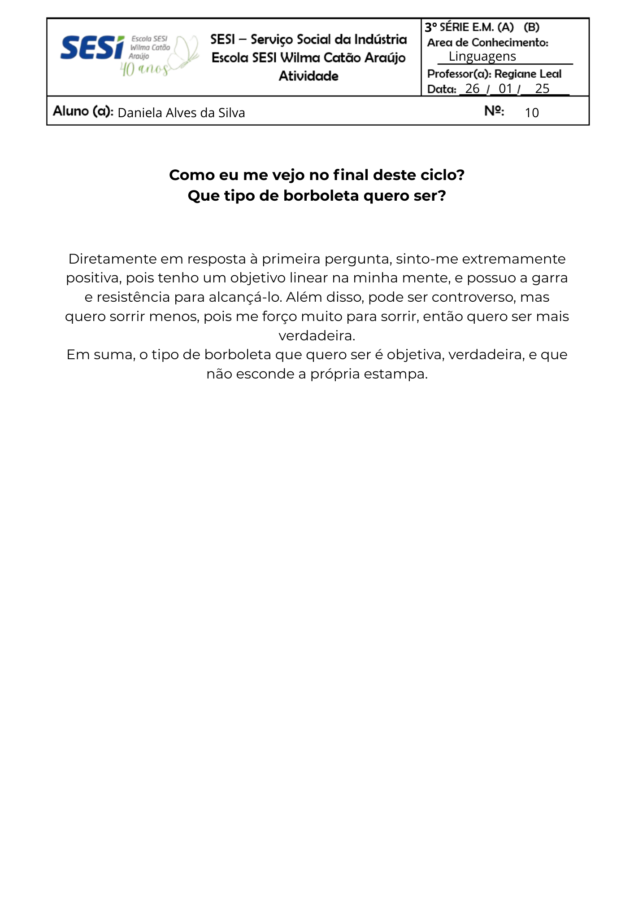
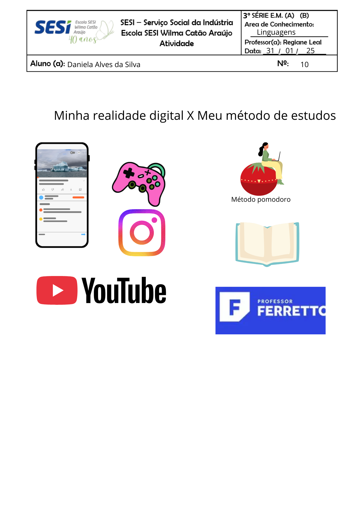
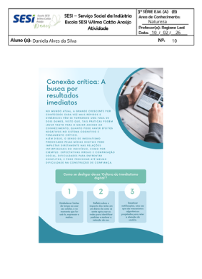

Como eu me vejo no final deste ciclo? Que tipo de borboleta quero ser? (26/01)

Quadro dividido em dois lados: minha realidade digital x meu método ideal de estudos (31/01)

Debate "Os Efeitos da Era do Imediatismo" (10/02)

Slides sobre os sujeitos (09/03)